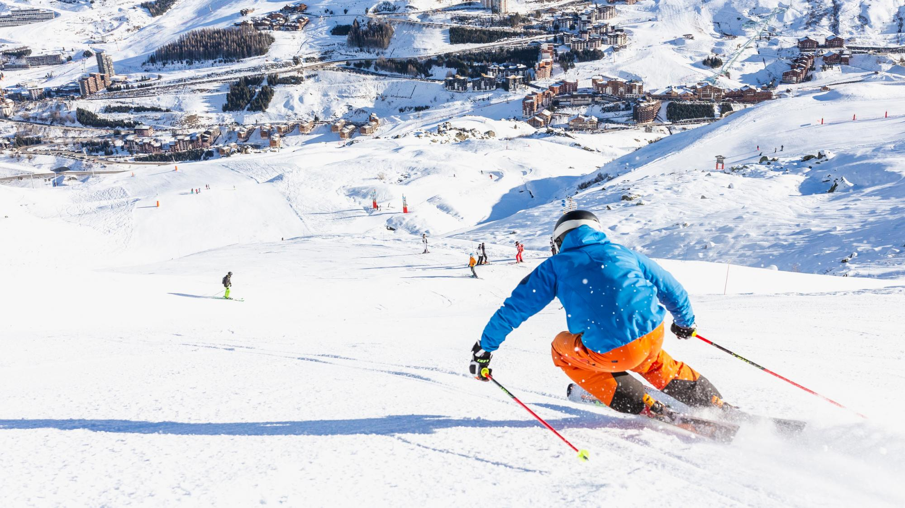
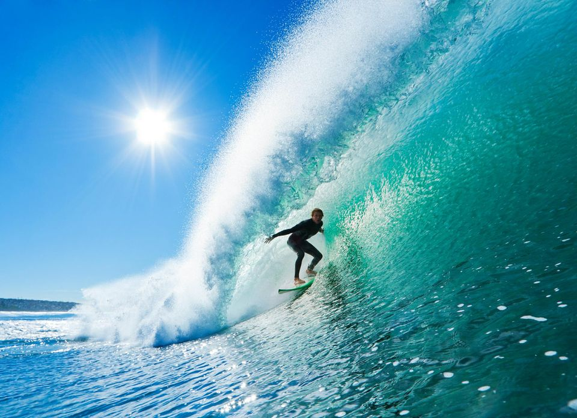

Arthur Margerit
Étudiant de KEDGE Business School passionné par le sport 🏋️♀️
Informations et compétences
Français
20/11/2000
Marseille

Anglais, Espagnol

Microsoft Office
Présentation
Je souhaite faire un master spécialisé dans la finance. C'est un secteur qui est extrêmement complet à mes yeux et je pense avoir les qualités requises pour y travailler. En effet, je suis plutôt dynamique et rigoureux. De plus, je pense avoir une bonne capacité d'adaptation et un bon sens du relationnel.
Centres d'interêt
Tennis
Golf

Ski

Surf
Voyages
Jeux vidéos
Formation
Expérience profesionnelle